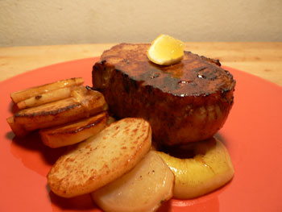
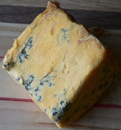

Pork chops and Colston Bassett
I made pork chops last night for the first time in ages. We used to eat them all the time in France, but we had one bad experience that I barely even remember that put us off chops (but not pork altogether). Whole Foods had center-cut, boneless loin chops for $6.99 a pound last night, so I got us two small ones.
First I sautéed some sliced potatoes and a Fuji apple until they got crispy and soft, then I doused the chops in Meyer lemon juice, salt, and pepper and threw them in my trusty cast-iron skillet. Ten minutes later I had this on the table:

Of course the chop wasn’t cooked through, so I had to put it back over the heat for five more minutes, but that’s no big deal. Everyone knows I have trouble with the temperature of pork. Mom, please show me the way. You once mentioned to me a good way of braising chops, didn’t you? This dish came out well, but it still could have been more tender. Or maybe I just prefer tender meat, and I shouldn’t even buy pork chops or steak. I’m tired of wrestling with tough meat.

We also sampled some incredibly intense Colston Bassett cheese last night, which I’ve been wanting to try ever since Max McCalman said it was the best blue cheese in the world. I’d seen it at the cheese counter, but I was turned off by its steep price (about $20 a pound) and its odd, yellow hue. I got some last night because I found a hunk of it in the trial-size cheese basket, which I check out every time I go to Whole Foods. When n8 tasted it, he said, “This is dirty. I feel dirty just eating this.” And he’s exactly right. It’s like eating the flesh of a corpse, but sort of in a good way. It’s grainy, creamy, and potent. Anyone who comes to the apartment in the next week will have to taste it.
Come to think of it, this probably would have been delicious spread on top of the chops.
Comments
I have said it before and I will say it again; today’s pork is too lean to be tender. In their zeal for breeding out the fat (and where has that gotten us, anyway? The population of the U.S. is more obese than ever!) they have bred out all the flavor and tenderness. There are only two ways to have passably edible pork chops that I know of, and one is what you did; serve them on the rare side and they’ll be pretty juicy.
I don’t like them that way, though, so this is how I usually make them: first I season them with lots of salt, pepper, and cumin and brown them well on both sides in a skillet in plenty of olive oil. Then I quarter some lemons and squeeze the juice on the chops and leave the squeezed lemons in the pan. I mince about 5 or 6 large cloves of fresh garlic and sprinkle it all over the contents of the skillet, pour a little chicken stock in, cover, turn the heat down to low and simmer for about 2 hours or so, until the meat is so tender that you can cut it with a fork. About 1/2 hour before they are done I season them with some dried oregano. I add more stock as needed so there is always some liquid in the bottom of the pan.
I serve this with rice and it’s another man-pleaser. The lemony, garlicky drippings are really good on the rice. Make sure you use plenty of salt.
I didn’t know Whole Foods had a sample cheese bin but I’m going to look for it!
Ooooh! That sounds delicious! I’ll definitely give it a try and soon!
I forgot to ask, how was your cast-iron skillet after cooking the chops? I used to think there was something about fresh pork that would destroy the seasoning on cast iron, and you had the acidity of the lemon and the liqueur to contend with as well. I remember preparing pork and sauerkraut in my cast-iron Dutch oven when I was in college and having the whole thing turn black on me—too embarrassing, as I was trying to show off for a boyfriend! But this new cast iron comes specially seasoned so maybe they treat it with something that doesn’t come off as easily.
Hmm, you know I didn’t even consider that about the acidity, which was probably foolish on my part. I didn’t notice any problems, but I think I need to season the pan again anyway because it’s looking a bit rusty in places.
I didn’t realize there was a “good” way to eat the flesh of a corpse. You’ll have to explain that recipe in your next posting.
I mean that it tastes that way, but in a good way. The way cheese can also smell exactly like feet, but in a good way.
We spent the winter in Miami Beach/South Beach and dinghied to shore every day just to taste the magnificent array of blue cheese at a store called “Epicure”. It was some pricey cheese which if I had a lottery windfall…would buy by the ton. The stinkier and dirtier and bluer the cheese…the better it was. So rank…but in a GOOD way….& the smell of it lingered on your fingers and your clothing.
Mm, yes, Debra, I love the way it stays on my fingers! I’m always reluctant to wash my hands after handling it. I’ll keep that store in mind if I’m ever in the area!
Add a comment